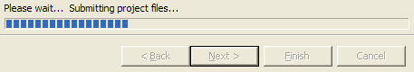
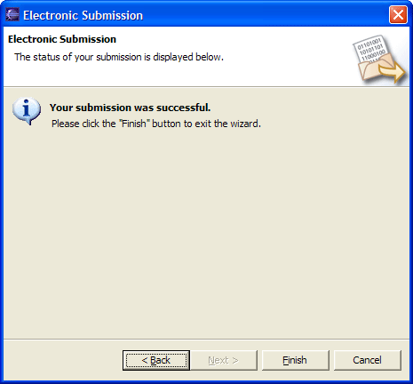

To invoke the submission wizard in Eclipse, you will use the following icon:
There are three locations in the user-interface from which you can submit a project.
The image above shows an example of the submission wizard. First, choose the assignment to which you want to submit from the tree. Then enter your username, and the password (if required) that you use to access the submission system. Finally, press the "Next >" button to package and submit the project. A progress indicator will appear at the bottom of the wizard:
Once the submission is complete, the final page of the wizard will show a summary of the process:
If there were any errors that occurred during submission, they will appear here. To dismiss the wizard, press "Finish". At this point, if the external submission system generated a response (such as a confirmation that the submission was received successfully, or automatically graded output), then this will appear in a browser window in the Eclipse editor.